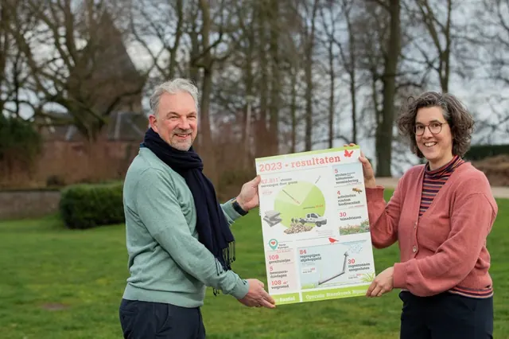

Nieuws ·
42.811 stenen vervangen door groen, en nog veel meer Steenbreek-acties in 2023

Operatie Steenbreek Nijmegen heeft afgelopen jaar 42.811 stenen vervangen voor groen. Er zijn 109 geveltuintjes aangelegd tijdens vijf bewoners-doedagen en 84 regenpijpen afgekoppeld van het riool. Daarnaast waren er een aantal mooie acties, waaronder het biodiversiteitsproject in Nijmegen-Oost en de samenwerking met Portaal voor bewoners in de Lingestraat. Ook heeft Steenbreek een publiek toegankelijke informatieplek gekregen in museum De Bastei. Dit staat in het Steenbreek Jaarverslag dat wethouder Cilia Daemen maandag 5 februari in ontvangst nam.
Operatie Steenbreek Nijmegen is een campagne van museum De Bastei en gaat nu het zevende jaar in. Onder het motto Stenen eruit, groen erin! roept De Bastei iedereen op aan de slag te gaan met het vergroenen van hun tuin, balkon en straat. Dat is goed voor het opnemen van regenwater, het is een gratis airco én het is aantrekkelijk voor vogels en vlinders. Na vijf jaar Steenbreek staat de teller op 637.116 verwijderde tegels (formaat stoeptegel), waarvan vorig jaar 42.811 tegels werden vervangen door groen.
Voor een klimaatbestendig Nijmegen
Wethouder Cilia Daemen (klimaatadaptatie en stadsvergroening) is enthousiast over de behaalde resultaten. “Complimenten voor de resultaten die Operatie Steenbreek in 2023 heeft behaald. Van gewipte stoeptegels tot aangelegde geveltuintjes en afgekoppelde regenpijpen. Door de acties van Operatie Steenbreek die zij samen met Nijmegenaren uitvoeren, werken we samen aan een klimaatbestendig Nijmegen.”
Ook museumdirecteur Hans Hooijmaijers, die het jaarverslag uitreikte, is enthousiast. “Het mooie aan Operatie Steenbreek vind ik dat het niet alleen een groenere en dus gezondere stad oplevert, maar dat het ook bijdraagt aan de sociale verbinding in de buurt. Zo zagen we dat bewoners in de binnenstad elkaar hielpen bij het aanleggen van de geveltuintjes. Dat zorgde voor een sneeuwbaleffect: bij de daaropvolgende actiedag waren er veel meer aanmeldingen.”
De uitreiking van het jaaroverzicht vond plaats bij het Valkhofpark. Een groene parel in dit deel van het centrum, de ‘achtertuin’ van museum De Bastei, belangrijk voor de biodiversiteit in de stad.
Samenwerking
Om de stad groener en klimaatbestendiger te maken, werkte Operatie Steenbreek Nijmegen in 2023 samen met onder meer NL Bloeit!, Onder de Bomen, Lentekracht en Dar.